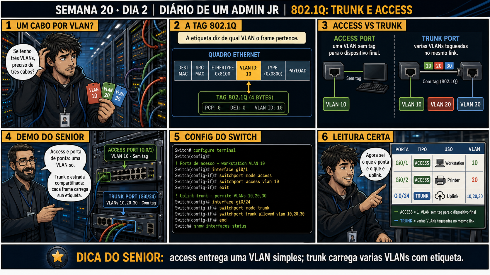

Semana 20 · Dia 2 | Nível Júnior — Redes
Tagging 802.1Q: Trunk e Access
a tag de VLAN viaja entre switches — mas nunca deveria chegar ao dispositivo final
ANTES DE ALTERAR, OBSERVE. DEPOIS DE ALTERAR, VALIDE.
1. O chamado
#2002
PRIORIDADE ALTA
11:05
aberto por: técnico júnior (autoatendimento)
host: uplink switch-A ↔ switch-B · serviço: link entre switches
"Configurei a porta entre os dois switches como access na VLAN 10, e agora só o tráfego da VLAN 10 passa entre eles — a VLAN 20 simplesmente sumiu do outro switch."
O que nessa configuração explica a VLAN 20 ter sumido?
💡 Passa o mouse nas palavras destacadas pra ver uma dica rápida — clica se quiser a explicação completa com analogia.
2. Antes de ver as opções — tenta responder
🧠 Recall ativo: qual é a diferença fundamental entre o que uma porta access entrega pro
dispositivo final e o que uma porta trunk entrega entre dois switches?
Uma porta access pertence a UMA VLAN só, e entrega o tráfego SEM tag pro dispositivo final — o notebook
ou servidor conectado nem sabe que VLAN existe, ele só vê tráfego normal. Uma porta trunk carrega VÁRIAS
VLANs ao mesmo tempo, e cada pacote leva uma
tag 802.1Q
identificando de qual VLAN ele é — assim o switch do outro lado sabe pra qual VLAN encaminhar cada pacote
que chega por aquele único cabo físico.
3. Questão comentada — clica numa alternativa
Dois switches precisam trocar tráfego de VLAN 10 e VLAN 20 simultaneamente,
através de um único cabo conectando os dois. Qual configuração de porta, nos dois lados desse cabo, resolve
isso corretamente?
💡 Analogia do Sênior para Fixar: O princípio fundamental de 02 VLAN TAGGING TRUNK ACCESS é como o alicerce de sustentação de um viaduto: garante que a estrutura de comunicação suporte alto tráfego sem colapsar.
4. Decodificador de conceitos
Clica em qualquer termo pra ver a definição completa e uma analogia do dia a dia:
5. Ferramentas e leitura da evidência
| Tipo de porta | Comportamento |
|---|---|
| Access | Pertence a uma única VLAN; entrega tráfego sem tag ao dispositivo final. |
| Trunk | Carrega múltiplas VLANs; cada pacote leva uma tag 802.1Q identificando sua origem. |
--- estrutura correta do chamado #2002 ---
Switch A Switch B
├── Porta 3 (access, VLAN 10) ─── notebook financeiro
├── Porta 7 (access, VLAN 20) ─── notebook estagiário
└── Porta 24 (TRUNK, VLAN 10+20) ═══ Porta 24 (TRUNK, VLAN 10+20)
├── Porta 3 (access, VLAN 10) ─── servidor financeiro
└── Porta 7 (access, VLAN 20) ─── servidor estagiários
$ show interfaces trunk
Port Mode Vlans allowed
Gi0/24 trunk 10,20
--- erro do chamado: porta 24 configurada como access ---
$ show interfaces trunk
Port Mode Vlans allowed
Gi0/24 access 10 ← só VLAN 10 passa, VLAN 20 nunca atravessa o link
5.1 O painel 5 da prancha de hoje mostra o sênior explicando que um notebook conectado numa porta trunk por engano recebe tráfego confuso e com tags visíveis
Um colega conecta acidentalmente um notebook comum numa porta configurada como trunk, em vez de access.
Por que conectar um dispositivo final comum numa porta trunk normalmente causa
problemas de conectividade?
💡 Analogia do Sênior para Fixar: Diagnosticar anomalias em 02 VLAN TAGGING TRUNK ACCESS é como o eletricista usando o multímetro no quadro de disjuntores: mede a passagem de sinal no ponto exato da falha.
5.2 "Uma porta trunk carrega TODAS as VLANs do switch automaticamente?"
Um colega acha que configurar uma porta como trunk já libera automaticamente todas as VLANs existentes no switch, sem precisar especificar quais.
Por que geralmente é uma boa prática especificar explicitamente quais VLANs uma
porta trunk deve carregar, em vez de liberar todas por padrão?
💡 Analogia do Sênior para Fixar: Aplicar as boas práticas de 02 VLAN TAGGING TRUNK ACCESS é como o protocolo de segurança da aviação: elimina pontos únicos de falha e garante previsibilidade operacional.
6. Procedimento profissional
- Identifique se a porta conecta um dispositivo final (access) ou outro switch/equipamento que precisa de múltiplas VLANs (trunk).
- Configure porta access sempre associada a UMA VLAN específica.
- Configure porta trunk especificando explicitamente quais VLANs são permitidas naquele link.
- Confirme a configuração dos dois lados de um link trunk — eles precisam concordar sobre quais VLANs estão sendo carregadas.
- Nunca conecte um dispositivo final comum diretamente numa porta configurada como trunk.
7. Laboratório guiado — marca conforme for testando
Segurança: execute os testes apenas em ambiente de laboratório (switches gerenciáveis de teste ou simulador) e confirme nomes de dispositivos e portas antes de cada mudança.
- Configure a porta de conexão entre dois switches de laboratório como access, numa única VLAN, e teste tráfego de uma segunda VLAN.Resultado esperado: tráfego da segunda VLAN não atravessa o link entre os switches.
- Reconfigure essa mesma porta como trunk, permitindo as duas VLANs, nos dois lados do link.Resultado esperado: tráfego das duas VLANs agora atravessa o link normalmente.🧑🏫 Aqui entra o Mentor (em breve): se os dois switches não concordarem sobre as VLANs permitidas no trunk, este é o ponto onde o chat com o Sênior-IA vai te ajudar a comparar as duas configurações lado a lado.
- Confirme com show interfaces trunk (ou equivalente) quais VLANs estão realmente passando pelo link.Resultado esperado: lista mostrando as VLANs corretas permitidas naquele trunk.
- Documente a diferença de comportamento entre a configuração access e a trunk no mesmo link.Resultado esperado: relatório claro mostrando o efeito de cada modo de porta.
8. Validação e encerramento
- Porta access pertence a uma VLAN só; porta trunk carrega múltiplas VLANs com tagging 802.1Q.
- Um link entre switches que precisa carregar várias VLANs deve ser configurado como trunk, não access.
- Dispositivos finais comuns não interpretam tags 802.1Q — nunca devem ficar numa porta trunk.
- Especificar VLANs permitidas explicitamente num trunk é boa prática de segurança.
Rollback e limites
Reconfigurar o modo de uma porta (access/trunk) é reversível e rápido num switch
gerenciável, mas produz impacto imediato: um link mal configurado entre switches pode isolar VLANs inteiras
(como no chamado #2002) ou, no sentido oposto, expor tráfego que deveria ficar restrito a uma VLAN específica.
Sempre confirme os dois lados do link antes e depois da mudança.
💡 Sobre repetição espaçada: "access entrega sem tag; trunk entrega com tag"
é a distinção mais cobrada em qualquer certificação básica de redes — vale memorizar essa frase exata. O Anki
vai reforçar essa distinção.
9. Resposta final
Alternativa correta: A. Nesta aula, a correção foi configurar a porta
entre os dois switches como trunk, permitindo VLAN 10 e VLAN 20 simultaneamente. O ponto central do caso é
este: a tag de VLAN viaja entre switches — mas nunca deveria chegar ao dispositivo final.
🔓 O que você desbloqueou hoje
Capacidade de configurar corretamente portas access e trunk, entendendo o
papel do tagging 802.1Q. Amanhã você configura VLANs diretamente numa interface Linux, usando subinterfaces
taggeadas — a mesma lógica do switch, agora dentro do sistema operacional.